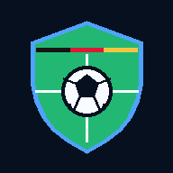

LigaKompakt
100 % KOSTENLOS · KEINE ANMELDUNG
Bundesliga live, Tabelle, Spielplan, Tipps, Statistiken und dein Lieblingsverein – kompakt in einer App.
LigaKompakt kostenlos öffnenFunktionen
Live-SpieleErgebnisse und Spielstatus auf einen Blick.
Live-TabelleAktuelle Platzierungen, Punkte und Tordifferenz.
SpielplanAlle 34 Spieltage mit Terminen.
TippspielEigene Tipps, Punkte und Saisonbilanz.
LieblingsvereinDein Team personalisiert im Fokus.
DirektvergleichVerein gegen Verein vergleichen.
KalenderSpiele als Kalendertermine speichern.
SpielalarmOptionale Benachrichtigungen und Testalarm.
DatensicherungProfil, Favorit und Tipps exportieren/importieren.
InstallationAls Web-App auf iPhone und Android nutzbar.